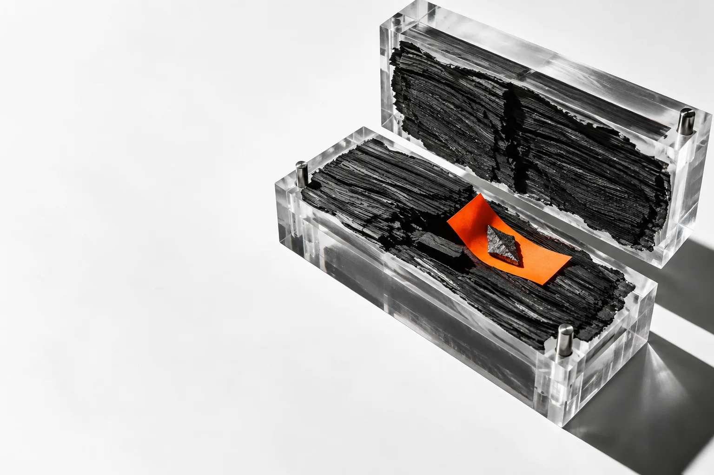

Static analysis for cloned repositories, coding assignments, and source you do not trust yet.
The repository is treated as evidence.
Every file stays inert while repyy follows install behavior, suspicious code paths, secret material, and supply-chain indicators.
Result language that refuses false certainty.
No findings is not the same as safe.
0Below your threshold1Threshold reached2Scan incomplete3Invalid command
Your code does not become someone else’s dataset.
No source upload, telemetry, account, or automatic network update.